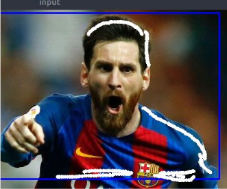
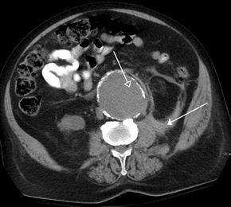
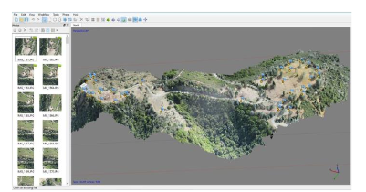

Image Segmentation adalah salah satu teknik dalam pemrosesan gambar. Pemrosesan gambar adalah salah satu bidang yang penting untuk generasi millennial jaman sekarang. Terbukti dengan adanya Snapchat, Instagram, Tik-Tok , Musical.ly dan aplikasi-aplikasi untuk content creator lainnya. Salah satu yang terkenal dari image processing adalah image segmentation yang mana dapat memisahkan objek-objek yang diinginkan. Tujuan dari image segmentation adalah untuk memisahkan objek-objek gambar yang kita inginkan
Jika anda ingin melakukan segmentation dengan lebih mudah, kalian bisa menggunakan library OpenCV. OpenCV (Open Source Computer Vision) adalah kakas yang ditujukan untuk membantu programmer agar lebih mudah dalam melakukan image processing tanpa harus mengembangkan algoritma dari tahap awal. Tentu jika membutuhkan sesuatu yang lebih spesifik kita harus mengembangkan sendiri algoritma akan tetapi OpenCV sudah banyak mendukung fungsi-fungsi umum untuk melakukan pemrosesan gambar.
Berikut ini adalah contoh image segmentation menggunakan opencv dengan teknik grabcut.
Untuk source code sendiri dapat menggunakan code yang tertera pada dokumentasi berikut :
Tahap Pertama
Tahap Kedua
Pada tahap ini rambut messi ter-cut sehingga kita harus membenarkannya dengan memberikan sedikit sentuhan penunjuk dengan menggambar sedikit petunjuk atau garis sebagai contoh berikut

Tahap Ketiga
Tahap Keempat

Medical Imaging : A CT scan image showing a ruptured abdominal aortic aneurysma

Mapping : 3D Reconstruction , Agisoft Software